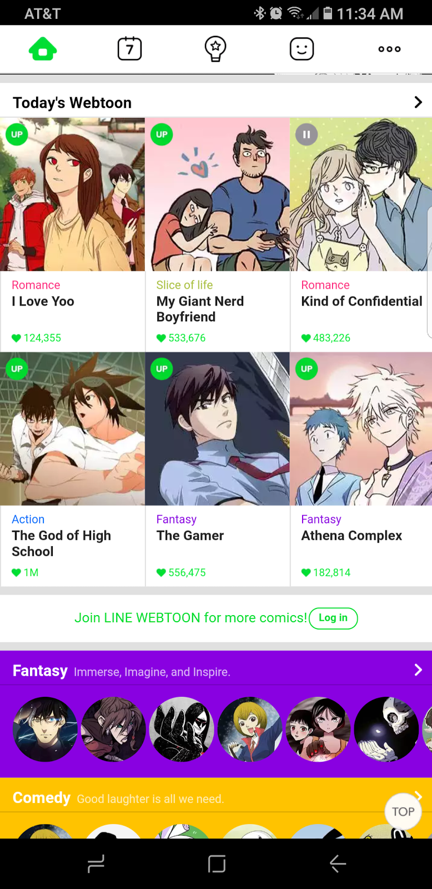
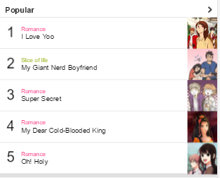
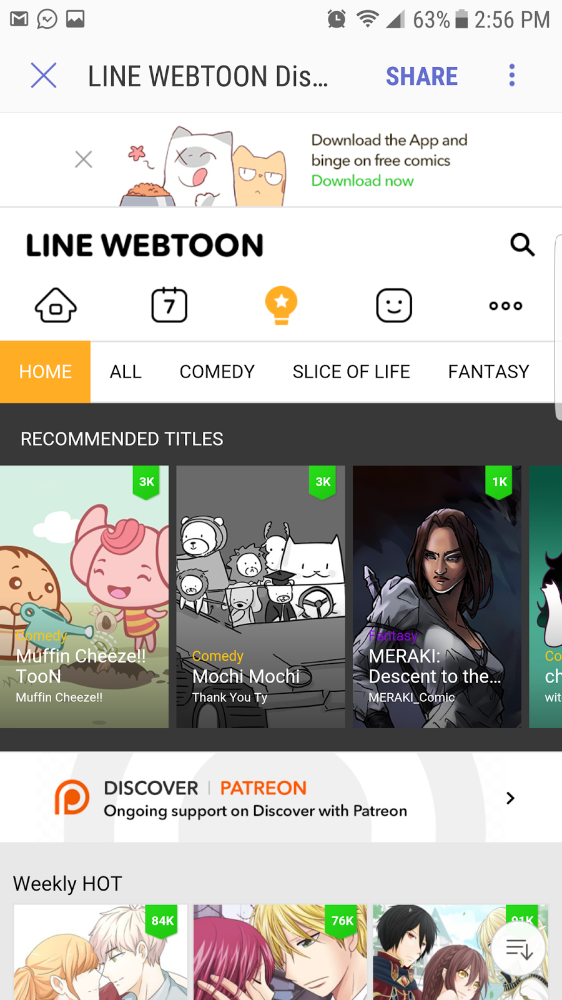

Design - Analysis Assessment
www.webtoons.com
Design Principles
Proximity — Tyler Watson
Proximity for web design purposes means that similar or related elements should be grouped together, while those that are unrelated or dissimilar should be separated. In the case of our website we have good organization of related fields of information. All the new releases are grouped together and at a glance for the viewer. This is the same as you scroll down the field and find genres, most popular by genre, and most popular by age group. At the top of the page you will find a navigation bar for different parts of the site and at the bottom the find the navigation bar to download the app and social media.

Alignment — Ashley Offret
The organization of these comic titles is easy to view through the grid-like alignment. Similar to a Modular Grid, each of the comic titles is arranged in different sections of the grid, thus making it easier to navigate. Also, in each comic title there is a smaller grid where there is the cover picture in one and the title and comic type in the other. This allows the client to easily read and understand which comic they are selecting and what type of comic they will be reading.
Repetition — Mariah Ashley
Repetition is used in various ways across the pages of the website. Repetition is used to form a calendar view of comics for each day in a month. This is repeated again on the home page under the category “Today’s Webtoons”, eliminating the need for the user to access the calendar page to look for the current day’s webtoons. Repetition is also used differently for organizational needs on the home page. This keeps the home page organized while keeping it interesting. Also on the homepage, there is a section for different Genres. These shapes indicate that you can scroll left to find a comic that interests you; then, below that there is another section that shows popular comics, using the same formating. The information and links in the last screenshot are repeated on every page listed on the navigation bar. It includes a download for the phone app, social media links, copyright information, and a button to take you back to the top of the page. This method allows the user to navigate easily because of the consistency between pages; the user doesn’t have to look for a new way to navigate on each page and allows them to feel comfortable as they switch from page to page.
Contrast — Carlos Garcia
The element of contrast is the difference between two or more colors, in this case, the author interacts with white, dark-yellow and black backgrounds. The 60% of the background is white, which make it simple and enjoyable to user as he or she focus on the main content. The black background is a wide horizontal strip that contrast the rest of the white background (around 20% of the website), and used to highlight an specific content, which in this case is “recommended titles”. We can see then how these colors create a comfortable environment for the user and how each color creates a contrast over the other element in order to give priority to the main content.
Typography — Clarke Hawkinson
In this image, it shows the different fonts that are used. They are all San Serrif, for easy reading. Along with that, the style is cartoon which fits extremly well for this wesite. Not only is the typography for the website in the coding all similar, also within the pictures that have text. The have planned it that way so that everything looks similar throughout the whole site.